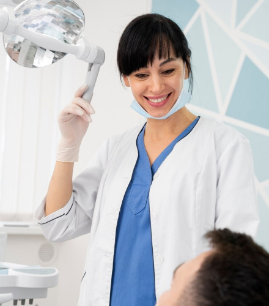

<section class="info-3__section">
    <div class="container">
        <div class="info-3__section-wrapper">
            <h2 class="info-3__section-title">
                Saran dokter gigi
            </h2>  
                 
            <div class="info-3__block info-3__block-1">
                <div class="info-3__block-top">
                    <h3 class="info-3__block-title">
                        Lina Nurhayati
                    </h3>
                    <p class="info-3__top-text">
                        Dokter - ortodontis, pengalam kerja lebih dari 20 tahun
                    </p>
                </div>
                <p class="info-3__block-text">
                    Dalam 5 tahun terakhir, kami telah melihat terobosan dalam penggunaan teknologi modern untuk kesehatan dan kecantikan. Perkembangan terbaru yang dipatenkan menjamin kepastian, kesempurnaan, dan kualitas maksimum dari veneer yang diperoleh. Veneer yang dapat dilepas saat ini adalah tren yang memberi setiap orang kesempatan nyata untuk menjadi lebih menarik dan mendapatkan senyuman impian mereka, dengan sedikit usaha dan keuangan.
                </p>
            </div>
            <div class="info-3__block info-3__block-2">
                <div class="info-3__block-top">
                    <h3 class="info-3__block-title">
                        Mulai dari mana ?
                    </h3>
                </div>
                <p class="info-3__block-text">
                    Sering orang bertanya perlu kah berkonsultasi dengan spesialis sebelum menggunakan veneer. Jika kita berbicara tentang Snap On Smile Veneer, maka konsultasi tidak diperlukan.
                </p>
            </div>
            <div class="info-3__block info-3__block-3">
                <div class="info-3__block-top">
                    <h3 class="info-3__block-title">
                        Berapa lama dapat menggunakan Veneer?
                    </h3>
                </div>
                <p class="info-3__block-text">
                    Anda bisa memakai veneer sepanjang hari. Pergi bekerja, berolahraga, berjalan. <br>
                    Berkat bahan tipis yang inovatif, Anda akan tetap nyaman bahkan saat makan. Disarankan untuk melepas veneer di malam hari.
                </p>
            </div>
        </div>
    </div>
</section>